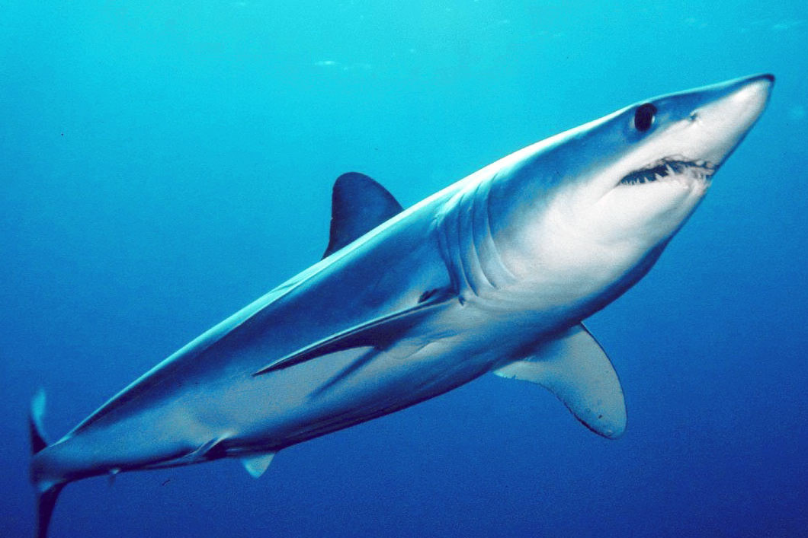
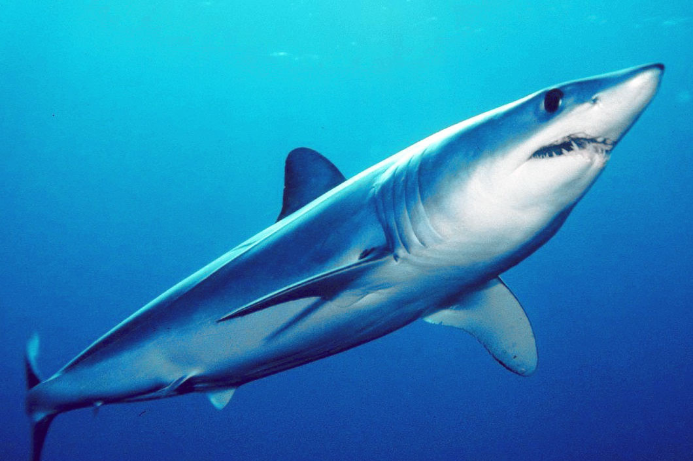

SHARKS
In existence for more than 150 million years, sharks. There are around 400 species of sharks, however most of us are only familiar with a few. For the fragile marine ecosystems to remain healthy, they are essential.
Although they have a reputation for being ferocious killers, sharks are considerably more likely to be killed by people than the reverse. The demand that is causing the killing is largely driven by illegal fishing as well as markets for shark fins around the world, which are used to prepare soup.
Although recent conservation efforts have slowed the steep loss, sharks grow very slowly, maturing over many years, and they give birth to very few pups. The shark is especially vulnerable as a result of these traits. Shark populations cannot simply repopulate at the rate at which they are being wiped out.
Shark populations will have a chance to recover to healthy levels if the trade in shark products is stopped and wildlife protection laws are meaningful and effectively enforced.
 

| STATUS | POPULATION | LENGTH | HABITATS | POACHING |
|---|---|---|---|---|
| Vulnerable | Unknown | 8 inches — 40 feet | Oceans | Finning, overfishing, and bycatch |
LEARN MORE ABOUT